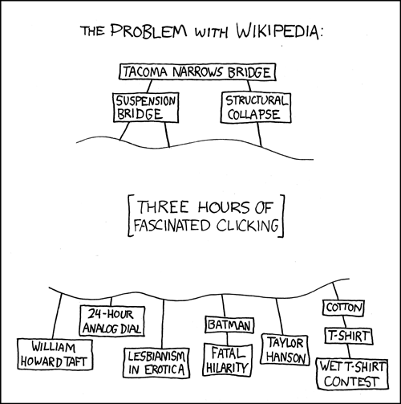

This application saves and downloads a copy of nearly all of the textual content of the English Wikipedia locally so that it can be accessed without internet connectivity. It downloads and saves a compressed dump file and an index, 14MB for the small version and 1GB for the larger one (you can select which one from the settings). Using WebWorkers and the File API, it seeks to a specific part of the compressed dump, decompresses it with a pure javascript implementation of LZMA and renders the Wikitext as HTML. All of this happens almost instantly.
You don't really need to, just bookmark this page and you can use it any time with or without internet access. This should work for Google Chrome, Opera, Firefox and Safari. It works best in Chrome, which supports requestFileSystem (other browsers are backed by a less-efficient IndexedDB/WebSQL store).
This was put together by @antimatter15 (Follow me on Google+!) but is built on Instaview by Pilaf, lzmajs by Gary Linscott, and of course all the content by the Wikipedia community. Special thanks to Guillermo Webster for CSS improvements, and Joel Gustafson for IPFS help.